Plog 01 · October 2025
Walking with the wind
Maqu, Eastern Tibetan Plateau
Up there, people live in a quiet rhythm with nature, walking with the wind, listening to mountains, and sharing their days with yaks who feel more like companions than cattle. Nature isn’t something they visit; it’s something they belong to.
So I collected some pictures < memories, and a few words that stayed with me.
- Gwa dun chi
- Thank you. For opening my eyes to the quiet perks of this way of living; a life the modern world too quickly calls nomadic, raw, or savage. But here, harmony with nature is a central theme of life. It reminds me that every society, whether West, East, or Tibet, carries its own wisdom and flavors. There is no civilized or uncivilized, only different shades of human civilization, each offering something the others cannot.
- Jyambu narmo
- Good food.
- Jipi lyasa
- Beautiful. I can understand why people search for Shangri-La in this corner of the world.
- Sanin jyalewo
- See you tomorrow… someday again.

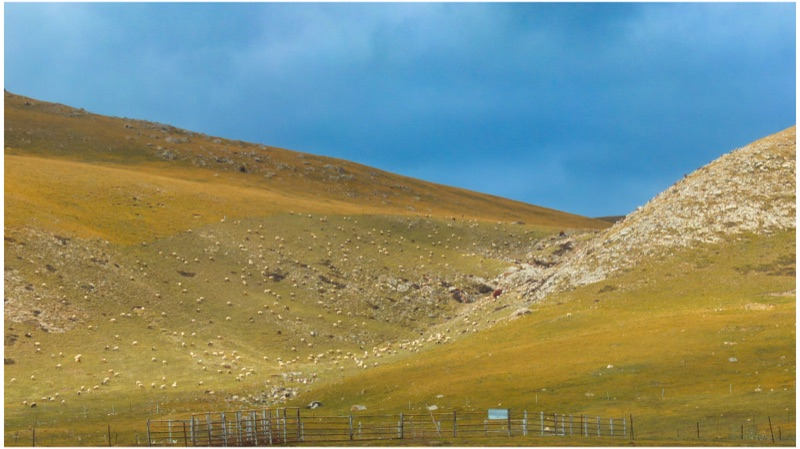

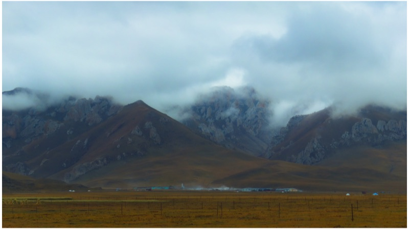

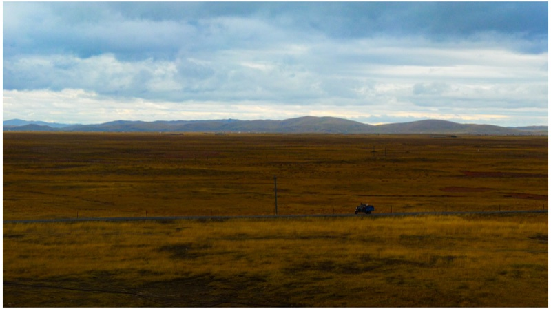

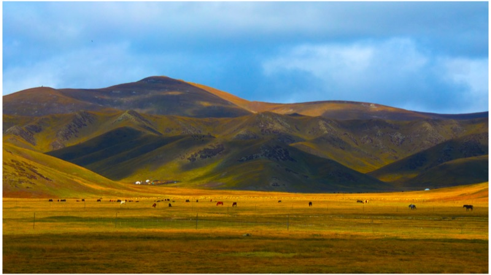

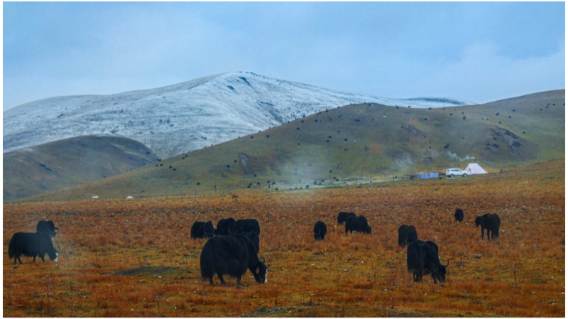

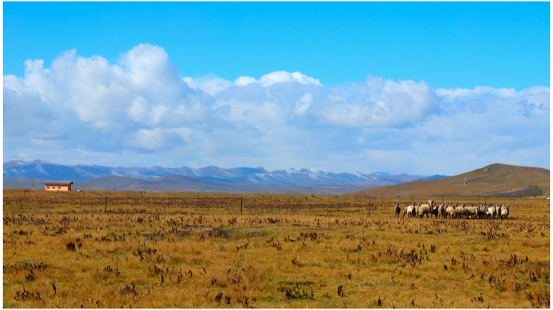

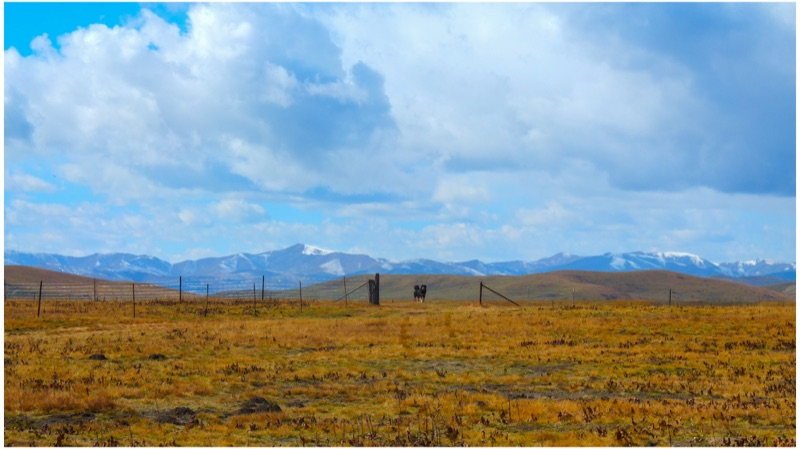

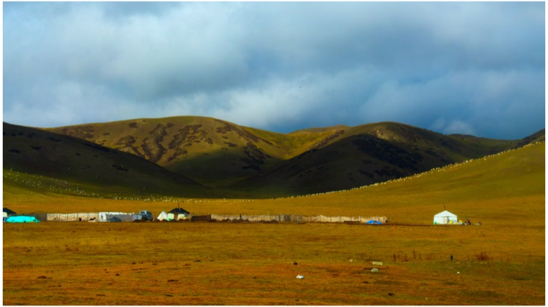

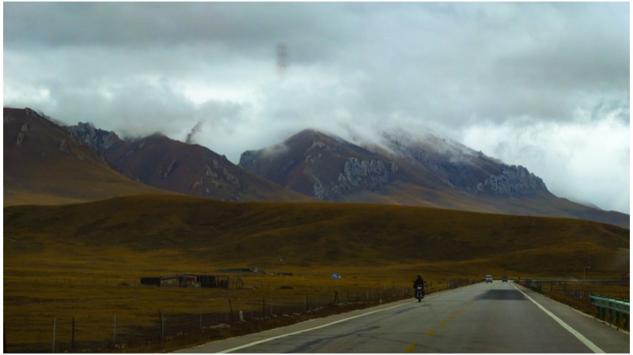

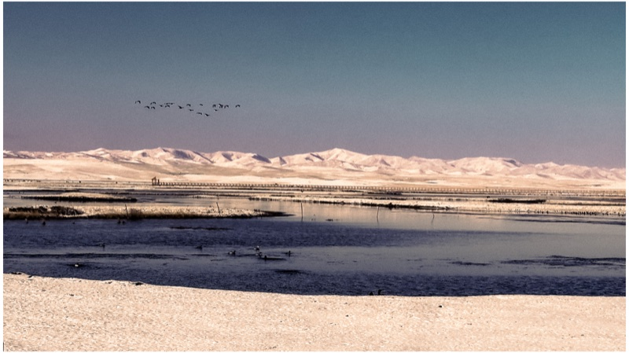

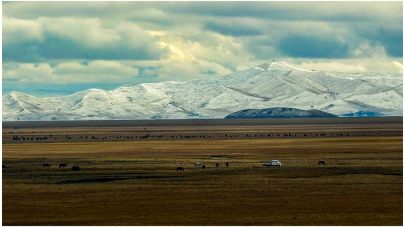


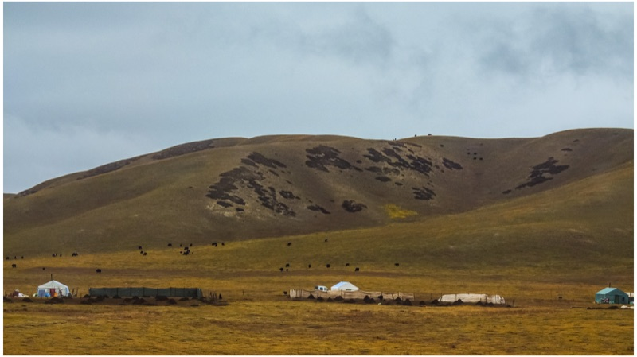

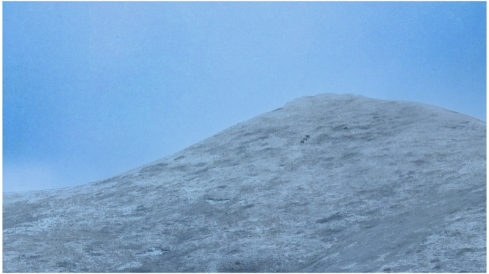

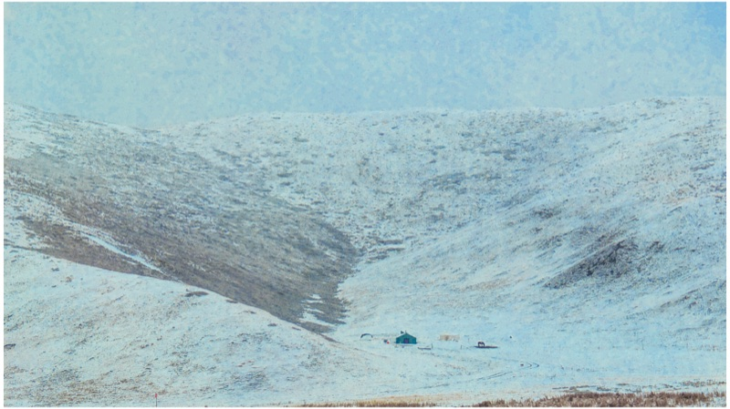


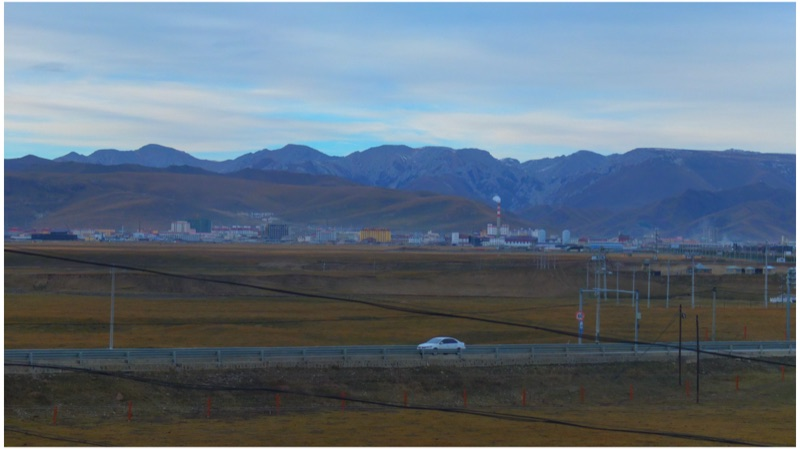

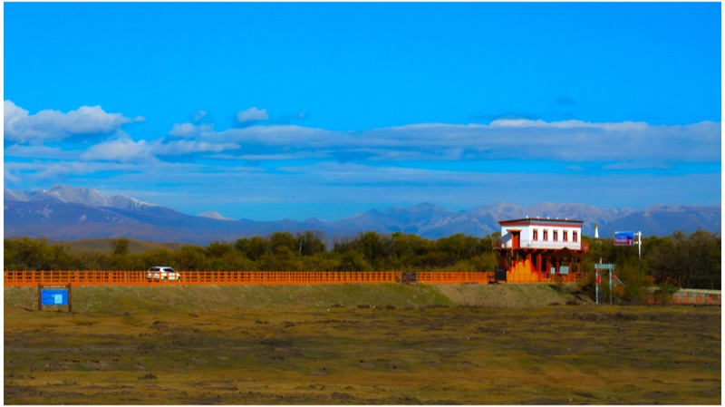

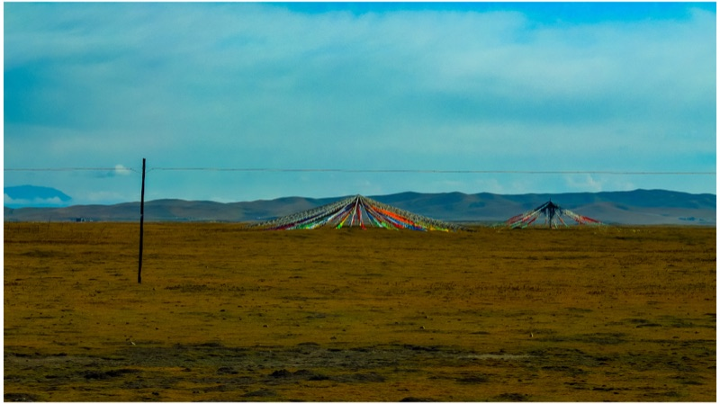

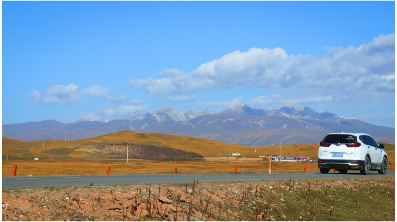

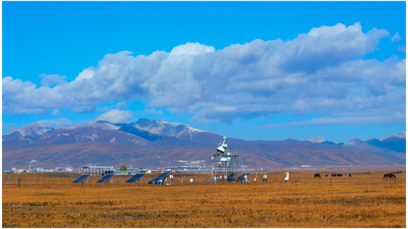

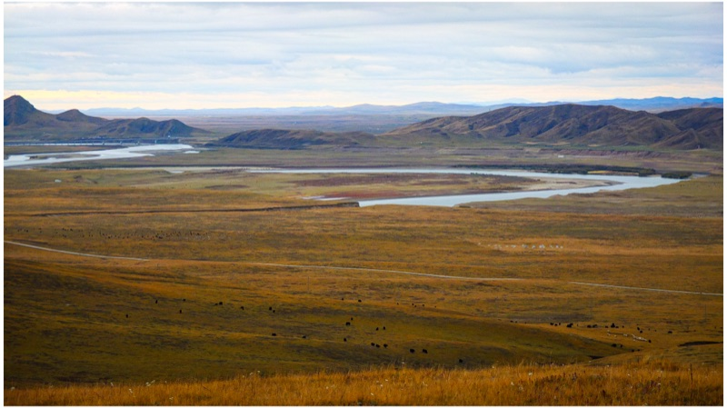

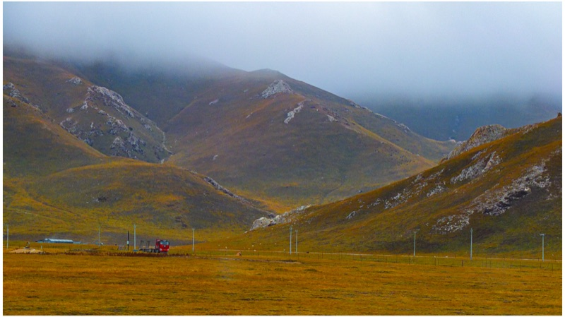

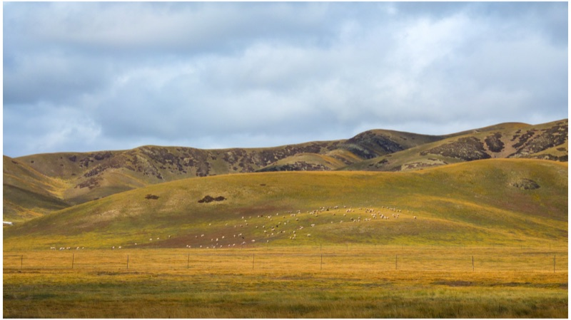

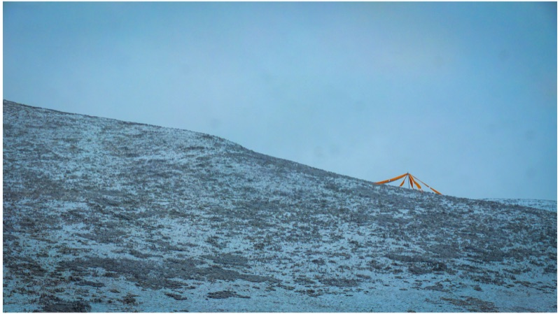

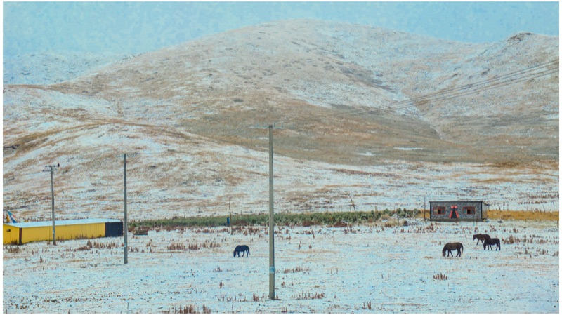

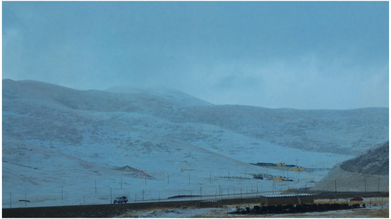